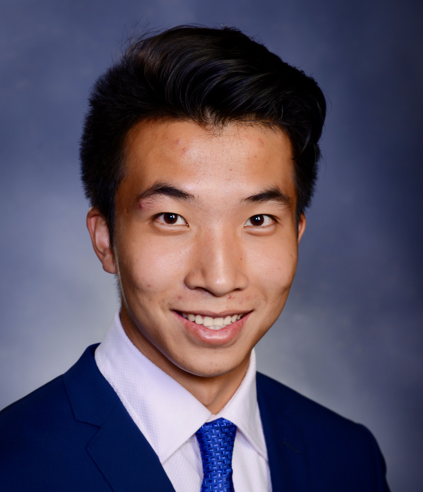

|
Bryant Y. Zhou 周钰京
|
 |
Ph.D. Student
Department of Mechanical and Aerospace Engineering
Princeton University
Advisor: Prof. Ryne Beeson
E-mail: yz1324@princeton.edu
|
Education
Ph.D. Student, Mechanical and Aerospace Engineering, Princeton University, 2022-Present
M.S. Mechanical Engineering, The University of Texas at Austin, 2020-2022
B.S. Mechanical Engineering, Bucknell University, 2016-2020
Research
My research interests include:
Recent Publications
A. Patil, Y. Zhou, D. Fridovich-Keil, and T. Tanaka, "Risk-Minimizing Two-Player Zero-Sum Stochastic Differential Game via Path Integral Control", Submitted to Conference on Decision and Control (CDC), 2023.
Y. Zhou, Z. Wang, and J. Wang, " “Illumination-Resilient Lane Detection by Threshold Self-adjustment Using Newton-based Extremum Seeking ", IEEE Transactions on Intelligent Transportation Systems, 2022. [pdf ]
Y. Zhou, Z. Wang, X. Zhou, H. Shen, J Ahn, and J. Wang, "Extremum-Seeking-Based Ultra-Local Model Predictive Control and Its Application to Electric Motor Speed Control", In Proceedings of the 2022 Modeling, Estimation and Control Conference (MECC), Jersey City, New Jersey, Oct. 2022. [pdf ]
Y. Zhou, Z. Wang, and J. Wang, "Real-Time Adaptive Threshold Adjustment for Lane Detection Application under Different Lighting Conditions Using Model-Free Control", In Proceedings of the 2021 Modeling, Estimation and Control Conference (MECC), Austin, Texas, Oct. 2021. [pdf ]
|